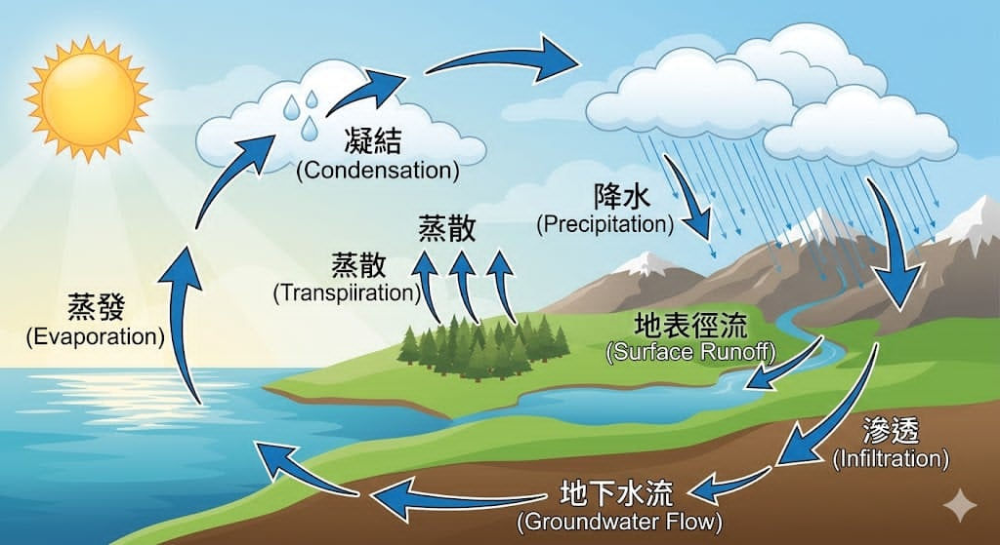

水文學是什麼？
水文學（Hydrology）是研究地球上水的來源、分布、循環與變化的科學。 它不只關注水在哪裡，更研究水如何流動、如何影響環境與人類生活。
在自然界中，水不斷透過不同型態轉換，例如液態、氣態與固態， 並透過水循環持續運動。水文學家透過觀測與模型分析， 來預測洪水、乾旱以及水資源變化。
點擊圖片探索水循環的每個過程
水文學（Hydrology）是研究地球上水的來源、分布、循環與變化的科學。 它不只關注水在哪裡，更研究水如何流動、如何影響環境與人類生活。
在自然界中，水不斷透過不同型態轉換，例如液態、氣態與固態， 並透過水循環持續運動。水文學家透過觀測與模型分析， 來預測洪水、乾旱以及水資源變化。

蒸發是水從液態轉變為氣態的過程，通常發生在海洋、湖泊與河流表面。 太陽提供能量，使水分子運動加快並逃逸到空氣中。 這個過程在熱帶地區特別明顯，也是水循環的起點之一。
蒸散作用是指植物透過葉片將水分以水蒸氣形式釋放到大氣中的過程。 植物的根部吸收土壤中的水分，經由莖輸送至葉片， 再透過氣孔散失到空氣中。這個過程與蒸發類似， 但特別發生在植物體內，因此常被視為水循環中的重要補充機制。
在森林或農業地區，蒸散作用對水氣供應影響極大， 甚至會影響局部氣候與降雨分布。
當水蒸氣上升至高空並遇到較低溫度時，會凝結成微小水滴， 形成雲。這些水滴會聚集，最終導致降水。
當雲中的水滴變大且重量增加時，就會以雨、雪或冰雹的形式落下。 降水是補充地表水與地下水的主要來源。
降水落到地面後，部分水會沿著地表流動， 形成溪流、河川，最終流入海洋。
另一部分水會滲入土壤，成為地下水， 供植物吸收或形成地下水系統。
地下水流是指滲入地表後的水，在土壤與岩石孔隙中緩慢移動的過程。 這些水通常儲存在含水層（Aquifer）中， 並可能經過數年甚至數百年才重新流出地表。
地下水流動的方向受到地形坡度、岩層結構與壓力差影響， 最終可能流入河川、湖泊或海洋，形成水循環的一部分。
地下水是許多地區的重要飲用水來源， 但若過度抽取，可能導致地層下陷或水資源枯竭， 因此需要妥善管理。
水文學對現代社會具有極高價值。透過水文分析， 我們可以預測洪水、設計排水系統、管理水庫， 並確保水資源的永續利用。
此外，在氣候變遷的影響下，降雨模式變得更加不穩定， 水文學研究變得更加重要，能幫助人類適應未來環境變化。